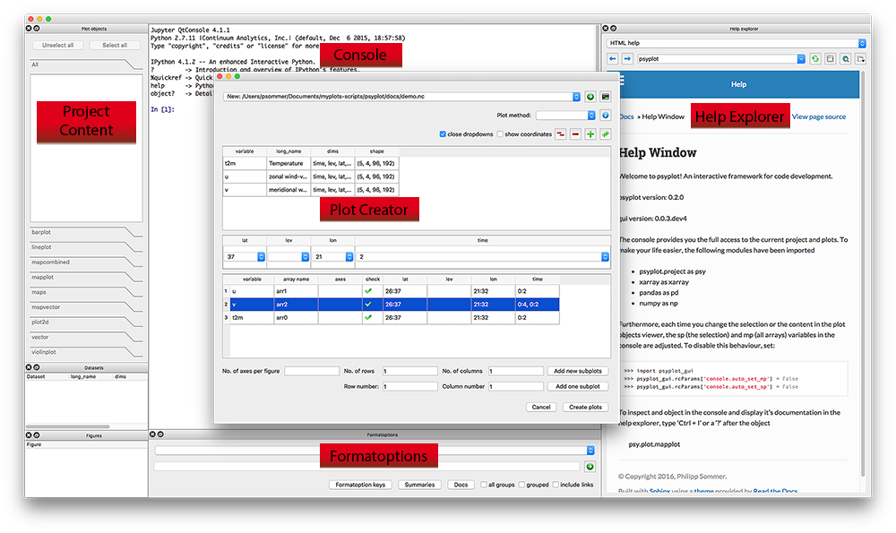
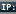

Getting started
{kind=link}
The Screenshot above shows you the essential parts of the GUI:
The Console: An IPython console
The Help Explorer: A browser to display help and browse in the internet
The Plot Creator: A widget to create new plots and open datasets
The Project content: A widget to interact with the psyplot project
The formatoptions widget: A widget to update and change formatoptions
Starting the GUI
Starting the GUI is straight forward but depends on how you installed it. If
you installed it via conda or pip, just open a terminal (or Command Window
cmd on Windows) and type psyplot.
The Console
The central widget in the GUI is an in-process IPython console that provides the possibility to communicate with the psyplot package via the command line and to load any other module or to run any other script.
It is based on the qtconsole module and it is, by default, connected to the help explorer. If you type, for example,
np.sum(
it will show you the documentation of the numpy.sum() module in the
help explorer. The same comes, if you type:
np.sum?
This feature is motivated from the Spyder editor and can be disabled via
the rcParams key console.connect_to_help (see Configuration of the GUI) or the
little  symbol at the top of the help explorer.
Furthermore, is connected to the current psyplot project (see
psyplot.project.scp() and psyplot.project.gcp()). Those are
- sp
This variable links to the current subproject (
psy.gcp())- mp
This variable links to the current main project (
psy.gcp(True))
The following example, which you can just copy and paste in the console of the GUI, illustrates this:
# in the beginning, sp and mp are empty
In [1]: print(sp)
...: print(mp)
...:
psyplot.project.Project([
])
1 Main psyplot.project.Project([
])
In [2]: psy.plot.lineplot(xr.DataArray([1, 2, 3], name='test').to_dataset())
Out[2]: psyplot.project.Project([arr0: psyplot.data.InteractiveList([ arr0: 1-dim DataArray of test, with (dim_0)=(3,), ])])
# now they both contain this data
In [3]: print(sp)
...: print(mp)
...:
psyplot.project.Project([arr0: psyplot.data.InteractiveList([ arr0: 1-dim DataArray of test, with (dim_0)=(3,), ])])
1 Main psyplot.project.Project([arr0: psyplot.data.InteractiveList([ arr0: 1-dim DataArray of test, with (dim_0)=(3,), ])])
# lets create a second one
In [4]: psy.plot.lineplot(xr.DataArray([1, 2, 3], name='test2').to_dataset())
Out[4]: psyplot.project.Project([arr1: psyplot.data.InteractiveList([ arr0: 1-dim DataArray of test2, with (dim_0)=(3,), ])])
# sp now only contains the new one, mp contains both
In [5]: print(sp)
...: print(mp)
...:
psyplot.project.Project([arr1: psyplot.data.InteractiveList([ arr0: 1-dim DataArray of test2, with (dim_0)=(3,), ])])
1 Main psyplot.project.Project([
arr0: psyplot.data.InteractiveList([ arr0: 1-dim DataArray of test, with (dim_0)=(3,), ]),
arr1: psyplot.data.InteractiveList([ arr0: 1-dim DataArray of test2, with (dim_0)=(3,), ])])
If you do not wish this behaviour, set the console.auto_set_mp and
console.auto_set_sp rcParams to False.
The Help Explorer
The help explorer provides you access to python objects and online information.
It can be used as a webbrowser if the icon is not clicked or the
help_explorer.online rcParams key is True (see Configuration of the GUI).
It is motivated by the Help of the Spyder editor and uses Sphinx to automatically render python documentation written in restructured Text.
By default, the help explorer uses the intersphinx extension to link to
different online libraries. This however always consumes time at the startup
and can be disabled by the help_explorer.use_intersphinx rcParams key.
It is also connected to the information functions of psyplot, e.g. the
psyplot.plotter.Plotter.show_keys() function. For example
In [6]: psy.plot.lineplot.keys()
+----------------+----------------+----------------+----------------+
| axiscolor | background | color | coord |
+----------------+----------------+----------------+----------------+
| error | erroralpha | figtitle | figtitleprops |
+----------------+----------------+----------------+----------------+
| figtitlesize | figtitleweight | grid | labelprops |
+----------------+----------------+----------------+----------------+
| labelsize | labelweight | legend | legendlabels |
+----------------+----------------+----------------+----------------+
| linewidth | marker | markersize | mask |
+----------------+----------------+----------------+----------------+
| maskbetween | maskgeq | maskgreater | maskleq |
+----------------+----------------+----------------+----------------+
| maskless | plot | post | post_timing |
+----------------+----------------+----------------+----------------+
| sym_lims | text | ticksize | tickweight |
+----------------+----------------+----------------+----------------+
| tight | title | titleprops | titlesize |
+----------------+----------------+----------------+----------------+
| titleweight | transpose | xlabel | xlim |
+----------------+----------------+----------------+----------------+
| xrotation | xticklabels | xtickprops | xticks |
+----------------+----------------+----------------+----------------+
| ylabel | ylim | yrotation | yticklabels |
+----------------+----------------+----------------+----------------+
| ytickprops | yticks | | |
+----------------+----------------+----------------+----------------+
would be converted to HTML and shown in the help explorer.
The Plot Creator
The plot creator is used to create new plots from a xarray.Dataset.
You can open it via .
The Project content
The project content shows you the current project (see
psyplot.project.gcp()). The selected arrays are the current subproject.
The formatoptions widget
The formatoption widget can be used to update the formatoptions of the current subproject or to show their help.